Reshaping tool gallery
Illustrator provides the following tools for reshaping objects:
|
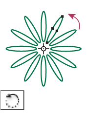 The Rotate tool (R) rotates objects around a fixed point. |
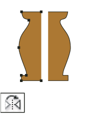 The Reflect tool (O) flips objects over a fixed axis. |
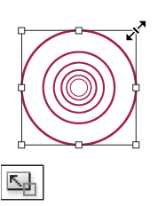 The Scale tool (S) resizes objects around a fixed point. |
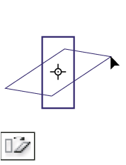 The Shear tool skews objects around a fixed point. |
|
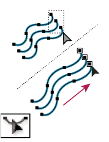 The Reshape tool adjusts selected anchor points while keeping the
overall detail of the path intact. |
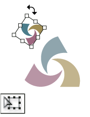 The Free Transform tool (E) scales, rotates, or skews a selection. |
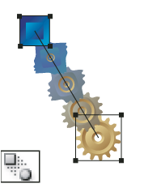 The Blend tool (W) creates a series of objects blended between
the color and shape of multiple objects. |
|
|
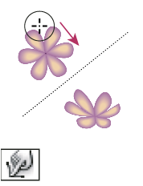 The Warp tool (Shift+R) molds objects with the movement of
the cursor (like molding clay, for example). |
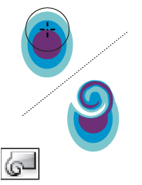 The Twirl tool creates swirling distortions within an object. |
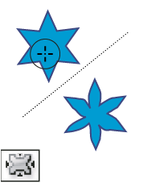 The Pucker tool deflates an object by moving control points
towards the cursor. |
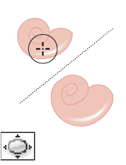 The Bloat tool inflates an object by moving control points
away from the cursor. |
|
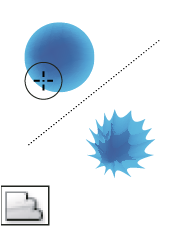 The Scallop tool adds random curved details to the outline
of an object. |
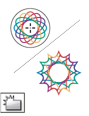 The Crystallize tool adds random spiked details to the outline
of an object. |
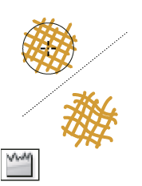 The Wrinkle tool adds wrinkle-like details to the outline
of an object. |